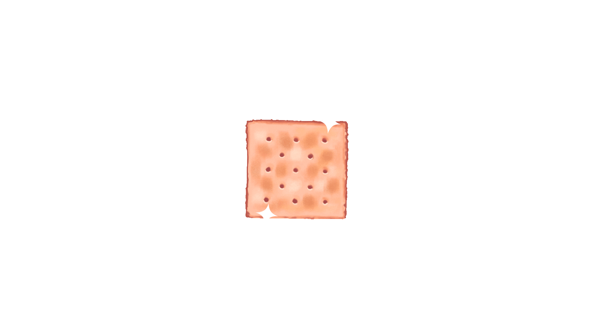

Hot Crackers

Hot Crackers
This is a no-bake version of Hot Crackers.
Ingredients
- 1 box of Saltine crackers(I prefer whole grain or wheat)
- 10 oz of Canola oil
- 1-3 tablespoons of crushed red pepper flakes
- 3 tablespoons or 1 packet of Hidden Valley Ranch Mix
- 1 tablespoon of garlic powder
Steps
- Pour Canola oil into a shaker cup
- Add the rest of the ingredients
- Shake well
- Put crackers into a water tight bowl
- Pour mixture evenly over the crackers
- Enclose and gently agitate
- Let sit for 15 minutes
- Turn over and repeat for a total of 3 times(1 hour)
- You may eat them out of the container if you are impatient
or store in a ziplock bag